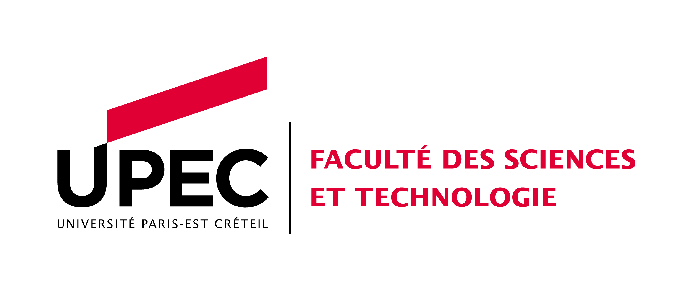
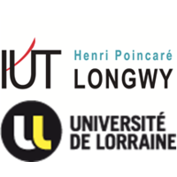
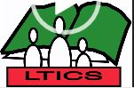

Formation par apprentissage pour un période de 2 ans chez EDF -DSIT Licence professionnelle systèmes automatisés réseaux et informatique industrielle Deux années de formation en BTS informatique et Réseaux Obtention du Baccalauréat Scientifique S2, Science Experimentales Descriptif de ma formation de Master en alternance à l'UPEC PARIS Descriptif de ma formation en licence professionnelle Systémes automatisés réseaux Descriptif de ma formation en BTS Informatique industrielle et Réseaux Mon Parcours d'études

2019-2021 : Master Ingénierie des Systèmes Complexes parcours Systémes Distribués et Technologies de la Data Science
Université Paris-Est Créteil (UPEC) -
Paris - île de France

2018-2019 : LP SARII -
à l’Université de Lorraine IUT Henry Poincaré de Longwy -
Lorraine - France
2015-2017 : BTS Informatique et réseaux
Ecole Polytech - CFPT Senegal/Japon

2014-2015 : BA Scientifique
- Lycée Taiba ICS -
Mboro - Sénégal
Fiches de présentation (contenu pédagogique, compétences et débouchés) des Formations
Maset Ingénierie des systemes Complexes Parcours Systèmes Distribués et Technologie des Réseaux.

Licence pro SARII
et Informatique industrielle
BTS Informatique ET Réseaux